OD-Metrics



A python library for Object Detection metrics.
Why OD-Metrics?
- User-friendly: simple to set and simple to use;
- Highly Customizable: every parameters that occur in the definition of
mAPandmARcan be set by user to custom values; - Compatibility with COCOAPI: each calculated metric is tested to coincide with COCOAPI metrics.
Supported Metrics
Supported metrics include mAP (Mean Average Precision), mAR (Mean Average Recall)
and IoU (Intersection over Union).
Installation
Install from PyPI
Install from GithubLicense
This work is made available under the MIT License